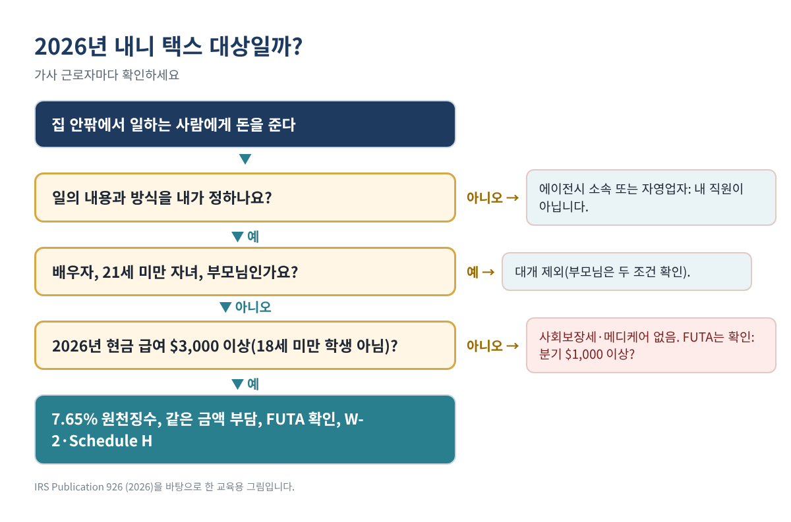
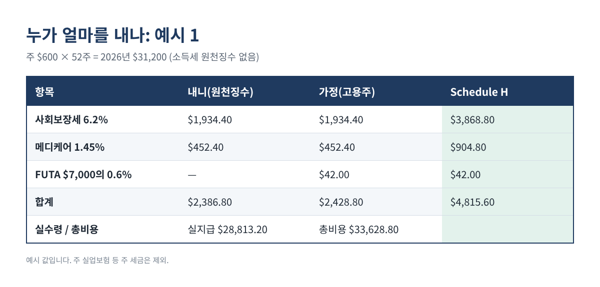
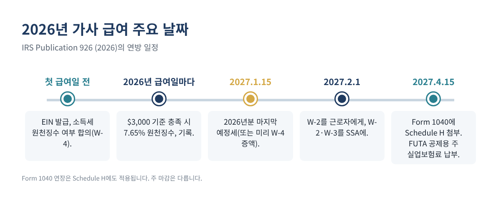

아이를 봐 주는 내니나 베이비시터, 부모님 간병인, 가사 도우미, 정원 관리인에게 돈을 주고 있다면 IRS 기준으로 "가사 고용주"일 수 있습니다. 그러면 해마다 할 일이 생깁니다. 사회보장세·메디케어 원천징수, 연방 실업보험세(FUTA) 납부, 근로자에게 W-2 발급, 본인 세금 신고에 Schedule H 첨부입니다. 많은 가정이 4월이 되어서야 알게 되어 서류도 늦고 세금도 한꺼번에 내게 됩니다.
이 글에서는 2026년 기준 금액, 예외, 엑셀로 따라 할 수 있는 단계별 계산, 2026년 급여에 대한 마감일을 정리합니다.
이런 분께 필요합니다: 집 안팎에서 일하는 사람에게 돈을 주는 가정. 특히 자녀 돌봄이나 연로하신 부모님 간병을 맡기고 계신 한인 가정.
무슨 일을 할지뿐 아니라 어떻게 할지까지 내가 정한다면 대개 내 직원입니다. 직원이 아닌 대표적인 경우는 두 가지입니다.
| 2026년 기준·세율 | 금액 | 적용되는 것 |
|---|---|---|
| 가사 근로자 1인에게 준 현금 급여 | 2026년 $3,000 이상 | 사회보장세·메디케어 |
| 사회보장세 | 근로자 6.2% + 고용주 6.2%, 한도 $184,500 | 원천징수 + 고용주 부담 |
| 메디케어 | 근로자 1.45% + 고용주 1.45%, 한도 없음 | 원천징수 + 고용주 부담 |
| 모든 가사 근로자에게 준 현금 급여 | 2025년 또는 2026년 어느 분기든 $1,000 이상 | FUTA |
| FUTA | 첫 $7,000에 6.0%, 주 공제 5.4% 받으면 순 0.6% | 고용주만 |
| 연방 소득세 | 근로자가 요청하고 내가 동의할 때만 | 선택 |
표 1. 2026년 가사 고용주 기준(IRS Publication 926, 2026).
"현금 급여"에는 지폐뿐 아니라 수표, 계좌이체, 결제 앱도 들어갑니다. 두 기준은 따로 봅니다. 사회보장세·메디케어는 내야 하는데 FUTA는 안 내는 경우, 그 반대도 있습니다.
사회보장세·메디케어 계산에서는 다음 사람에게 준 급여를 빼세요.
FUTA에서는 배우자, 21세 미만 자녀, 부모님만 뺍니다. 그래서 10대 베이비시터는 사회보장세·메디케어는 면제되어도 FUTA의 분기 $1,000 기준에는 들어갈 수 있습니다.

급여일마다 한 줄씩 A 날짜, B 시간, C 현금 급여를 적고 수식 칸을 둡니다(2행 기준).
D 분기: =ROUNDUP(MONTH(A2)/3, 0) E 누적 급여: =SUM($C$2:C2) F 사회보장세 원천징수: =IF($K$1>=3000, ROUND(C2*0.062, 2), 0) G 메디케어 원천징수: =IF($K$1>=3000, ROUND(C2*0.0145, 2), 0) H 실지급액: =C2 - F2 - G2 - [합의한 소득세]
K1에는 2026년 예상 현금 급여 합계를 넣습니다. $3,000에 닿을지 확실하지 않다면 기록을 계속하다가 확실해질 때 원천징수를 시작하거나, 미리 근로자와 상의하세요. 원천징수하지 못한 금액을 처리하는 방법은 Publication 926에 나옵니다. FUTA 기준은 분기 합계로 확인합니다.
분기 합계: =SUMIFS($C:$C, $D:$D, 1) (2~4분기도 같은 방식) FUTA 대상?: =IF(MAX(Q1:Q4)>=1000, "예", "아니오")
연말에는 합계를 Schedule H와 W-2에 옮깁니다.
사회보장 급여(W-2 3번 칸): =MIN(SUM(C:C), 184500) 메디케어 급여(W-2 5번 칸): =SUM(C:C) 사회보장+메디케어(양쪽 합계): =ROUND(SUM(C:C)*0.153, 2) (한도 이하일 때) FUTA(순 0.6%): =ROUND(MIN(SUM(C:C), 7000)*0.006, 2)
순 0.6%는 주 실업보험료를 제때(2026년분은 2027년 4월 15일까지) 내서 5.4% 공제를 다 받는다는 전제입니다. 공제 감액 주(credit reduction state)에서는 공제가 줄어듭니다.
| 예시(설명용) | 사회보장+메디케어 | FUTA | Schedule H 합계 | 가정 부담 |
|---|---|---|---|---|
| 1. 내니, 주 $600 × 52주 = $31,200 | $4,773.60 | $42.00 | $4,815.60 | $2,428.80 |
| 2. 시터, 분기 $700 = 연 $2,800 | 없음 | 없음 | $0 | $0 |
| 3. 16세 학생, $4,000 (여름 $2,500) | 없음 | $24.00 | $24.00 | $24.00 |
| 4. 친정어머니, $15,000, 부부 모두 돌봄 가능 | 없음 | 없음 | $0 | $0 |
표 2. 2026년 규정으로 계산한 예시 4개. 예시 2: $3,000 미만이고 분기 $1,000에 닿은 적 없음. 예시 3: 18세 미만 학생이라 사회보장세·메디케어는 면제지만 여름 분기 $2,500으로 FUTA 대상. 예시 4: 부모 예외. 예시 값이며 주 세금은 제외했습니다.
예시 1을 보세요. 가정은 고용주 몫 사회보장세·메디케어 $2,386.80과 FUTA $42를 내고, 내니 몫 $2,386.80은 급여에서 원천징수합니다. Schedule H에는 합계 $4,815.60이 나옵니다.

Schedule H 세금은 Form 1040과 함께 내기 때문에, 미루면 납부 부족 가산세가 생길 수 있습니다. Publication 926은 두 가지 방법을 안내합니다. 본인 직장에 새 Form W-4를 내서 급여 원천징수를 늘리거나, 예정세(estimated tax)를 내는 것입니다(2026년분: 2026년 4월 15일, 6월 15일, 9월 15일, 2027년 1월 15일).

사회보장세·메디케어는 없습니다. 2026년 기준 $3,000에 못 미칩니다. 다만 FUTA는 확인하세요. 어느 한 분기라도 $1,000에 닿았다면(예: 여름 분기 $1,200) 연간 합계가 $3,000 미만이어도 FUTA 대상입니다.
부모님께 드린 급여는 두 가지 특별 조건(18세 미만 또는 돌봄이 필요한 자녀, 그리고 이혼 후 미재혼·사별·배우자가 돌볼 수 없음)이 모두 맞지 않으면 사회보장세·메디케어에서 빠집니다. 부모님 급여는 FUTA 대상도 아닙니다.
아니요. 가사 근로자의 연방 소득세 원천징수는 선택이며, 근로자가 요청하고 내가 동의할 때만 합니다.
그해 W-2는 그대로 발급합니다. 근로자가 일찍 요청하면 요청일이나 마지막 급여일 중 늦은 날부터 30일 안에 주면 됩니다.
가능하지만 급여 신고 방식이 달라집니다. 그렇게 하기 전에 Publication 926의 해당 부분을 먼저 읽어 보세요.
위 과정을 그대로 해 주는 가사 고용인(내니 택스) 계산기 2026은(는) 아래 무료 키트 다운로드에서 가입 없이 무료로 받으실 수 있습니다(엑셀 + PDF 가이드).
이 글은 교육용 정보이며 세무·법률 자문이 아니고, 어떤 결과도 보장하지 않습니다. 주 규정은 다르니 IRS Publication 926과 거주하는 주의 기관을 확인하시거나 전문가와 상의하세요.